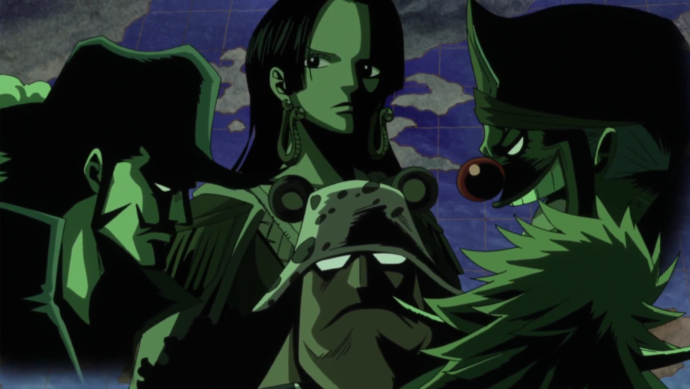

신세계에서 황제처럼 군림하는 4명의 대해적
원피스에 등장하는 전 세계에서 가장 강한 해적단의 선장 4명의 통칭, 해적왕이 상징적인 칭호라면 사황은 실질적인
권력에서 붙은 칭호로, '해적왕'의 '왕'은 '한 분야의 최고 실력자'라는 비유적 의미로 쓰인 말이라면, 사황의 황(황제)은
비유나 수사가 아니라 진짜 그들 자신이 칭호만 '선장'을 사용하는 황제 그 자체라는 점에서 차이가 있다. 세계정부 입장에서는
세계의 진실을 알게 될 그랜드 라인 제패자 쪽이 더욱 위협적일 수 있겠지만, 일반 시민들 입장에서는 그냥 세계일주한 해적
하나보다는 아예 신세계를 4등분해서 지배하고 있는 사황의 세력쪽이 훨씬 공포스러울 수밖에 없다.

사황을 견제하고, 신생 루키들을 저지하기 위한 또 하나의 전력들
칠무해가 존재하는 첫번째 이유는 바로 해군 본부와 더불어 사황을 견제하기 위함에 있다. 칠무해와 해군 본부는
가프의 말에서 나왔듯 사황을 저지하는 세력이며, 센고쿠 역시 정상결전에서 세력으로 웃돈다고 방심하지마라라며 칠무해와
해군본부는 사황 중 최강의 세력보다도 우위임을 드러냈다. 칠무해가 존재하는 두번째 이유는 신생 루키들을 사전에 차단하기
위함이다. 또한 칠무해는 표면상 어떤 해적의 부하로도 들어갈 수 없고 다른해적과 동맹도 맺을 수 없다. 부하로 들어가는 건
이미 칠무해보다 강한 강자가 있는 꼴이므로 그러면 위상이 흔들리게 되므로 불가능하며, 동맹을 맺는걸 금지하는 이유는
서로결탁해서 세계정부의 골칫거리가 되는 것을 막기 위함으로 추정된다. 이 조항 두 개를 하나라도 어기는 즉시 칠무해에서
탈퇴되며[10], 그때부터는 그냥 일반해적취급이다. 다만 산하해적단은 거느리는 것이 가능하며, 칠무해 본인과 직속해적단과
산하해적단 모두 어떠한 범죄도 면제된다. 칠무해를 폐지하려는 움직임의 가장 큰 원인.
원피스 세계관 최강, 최대의 무력 집단
말 그대로 원피스에 등장하는 세계정부 휘하의 해군 세력의 본부로 에니에스 로비, 임펠 다운과 함께 세계정부의 주요
3대 기관중 하나이다. 처음에는 마린 포드에 소재하고 있었으나, 정상결전 이후부터는 사카즈키의 지시로 신세계로 이전했다.
본부와 지부의 격차가 매우 큰 것이 특징이다. 해군 지부중에서 위대한 항로에 있는 G・L 지부를 제외한 나머지는 본부와
3계급 정도 차이가 있다고 한다. 예를 들어 네 개 바다의 먼 지부의 대령은 본부의 대위급 인사. 하지만 아무리 지부라해도
계급 높은 놈들치고 약한 놈들이 없다.
원피스 세계관 악의 축이자 작중 최악의 인간 말종 집단
세계귀족(World Noble)으로 불리는 원피스에 등장하는 일족. 800년 전 세계정부를 만든 20명의 왕족 중
알라바스타 왕국의 '네펠타리 일족'을 제외하고 성지 마리조아로 이주한 19개의 왕족들의 후예이다. 원피스 세계에서 핏줄만으로
권력의 핵심부에 위치한, 말 그대로 신이나 다름 없는 존재이다. 이들이 거주하는 도시의 이름도 '신역'이다. 천룡인은
자신들을 신이라 생각하며, 자신들 외의 다른 인간은 애초에 인간으로 생각하지 않는다. 이렇게 기본 관념 자체가 틀려먹어서
작품내에서 비슷한 수준을 찾을 수 없을 정도의 막장 행보를 보인다. 사람을 마치 물건처럼 노예를 부려먹는 것은 기본이고,
다른 사람들도 자기 애완동물보다 못한 존재로 취급한다. 천룡인의 노예들은 전원 폭탄이 달린 사슬을 전부 착용을 하고있으며 이
사슬은 억지로 풀면 폭발하도록 되어있다.